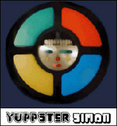

This was made over Christmas break 2000. I was at my parents house on vacation and stayed up late making the tracks with Buzz Tracker, which I had just downloaded. I used the same samples and effects for all of them. The EP is full of crunchy beats and melodic sustained synth sounds. Everything is a bit peaked out. As for the concept, each song represents a color on Simon. The color, hopefully, corresponds to the sound in some way.
"Amongst Items on My Desktop" was always from this session, but no included on this EP.